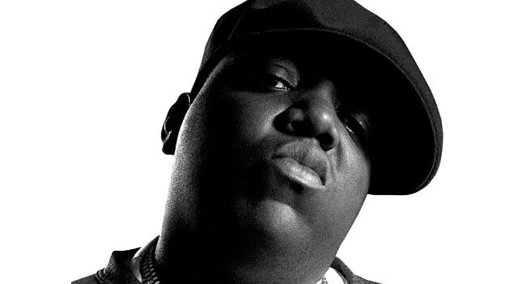
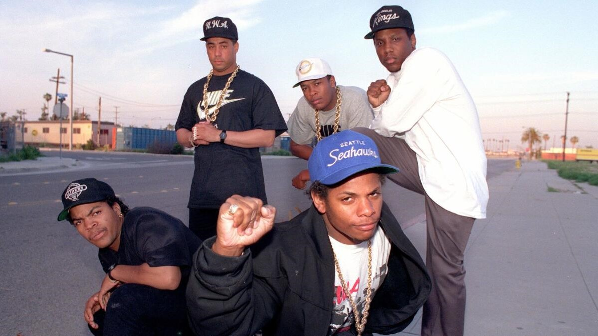
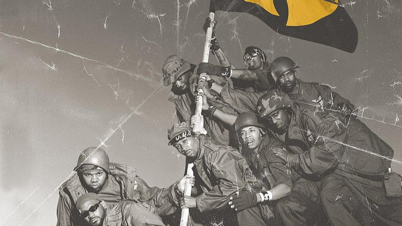
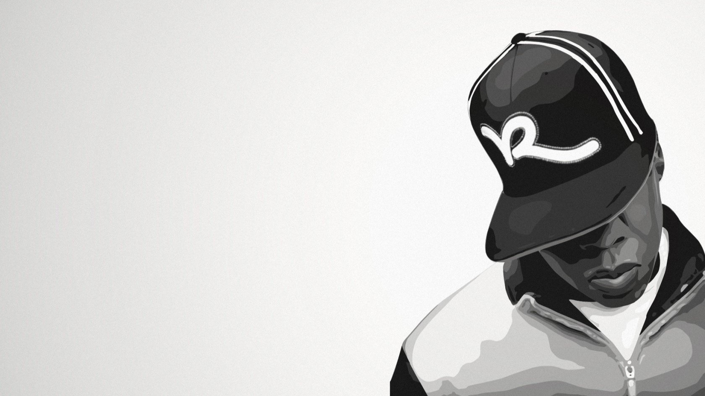

HISTORIA DEL RAP




Comienzos del Rap. Rap, como genero musical, nació a finales de la década de 1970 surgiendo en los Estados Unidos, específicamente de los barrios mas marginales de Nueva York, fue creado por jóvenes afroamericanos como una forma de expresión artística y cultural como una derivación del genero funk, este genero musical fue muy controversial en su momento siendo uno de los estilos musicales que menos sintonización tenia en la radio en esa época llegando a nombrarse así mismo Underground.
Este es el comienzo de las rimas en música de zonas urbanas y de calles afroamericanas, en esas calles, emergió un estilo que pretendía trasladar de forma poética y artística la violencia que sufrían los afroamericanos con el racismo y una lucha constante contra el sistema. Los ya conocidos MC o Maestro de ceremonias, es una manera que se hacen llamar algunos raperos, ellos podían dar forma a sus canciones agregando de rimas a una base musical, también conocido como “beat”, o simplemente tirando rimas al aire.
Que significa la palabra R.A.PExisten varias teorías sobre el significado de la palabra RAP, algunas teorías sostienen que el termino podría ser un acrónimo de Rythm and Poetry (ritmo y poesía), Recite a Poem (recitar un poema), de Revolución, Actitud, Poesía o de Respect and Peace (respeto y paz). Por otro lado, otras teorías sugieren que la palabra rap simplemente se apropia del termino ingles “rap”, que puede significar “golpear”, “golpe seco” y también “hablar”, tres connotaciones que encajan perfectamente con la música rap.
Este es el comienzo de las rimas en música de zonas urbanas y de calles afroamericanas, en esas calles, emergió un estilo que pretendía trasladar de forma poética y artística la violencia que sufrían los afroamericanos con el racismo y una lucha constante contra el sistema. Los ya conocidos MC o Maestro de ceremonias, es una manera que se hacen llamar algunos raperos, ellos podían dar forma a sus canciones agregando de rimas a una base musical, también conocido como “beat”, o simplemente tirando rimas al aire.
Que significa la palabra R.A.PExisten varias teorías sobre el significado de la palabra RAP, algunas teorías sostienen que el termino podría ser un acrónimo de Rythm and Poetry (ritmo y poesía), Recite a Poem (recitar un poema), de Revolución, Actitud, Poesía o de Respect and Peace (respeto y paz). Por otro lado, otras teorías sugieren que la palabra rap simplemente se apropia del termino ingles “rap”, que puede significar “golpear”, “golpe seco” y también “hablar”, tres connotaciones que encajan perfectamente con la música rap.
Tupac Y Biggie
Las muertes de Tupac Shakur y The Notorious B.I.G. (Biggie) son un tema bastante conocido en el mundo del hip-hop y la cultura popular en general. Ambos eran prominentes figuras del hip-hop en la década de 1990 y sus asesinatos, que ocurrieron en circunstancias aún no resueltas, han generado numerosas teorías y especulaciones.
Más

Pioneros del Rap
La década de los 80 se caracterizo por ser uno de los inicios del rap, en la que este genero musical dio sus primeros grandes pasos. Fue una época de diversificación del genero, en la que surgieron nuevos artistas que se centraban en la lírica metáfora de sus letras, así como en la creación de beats más complejos. Todo ello favoreció la expansión del movimiento del rap a nivel mundial. Los Pioneros del Rap